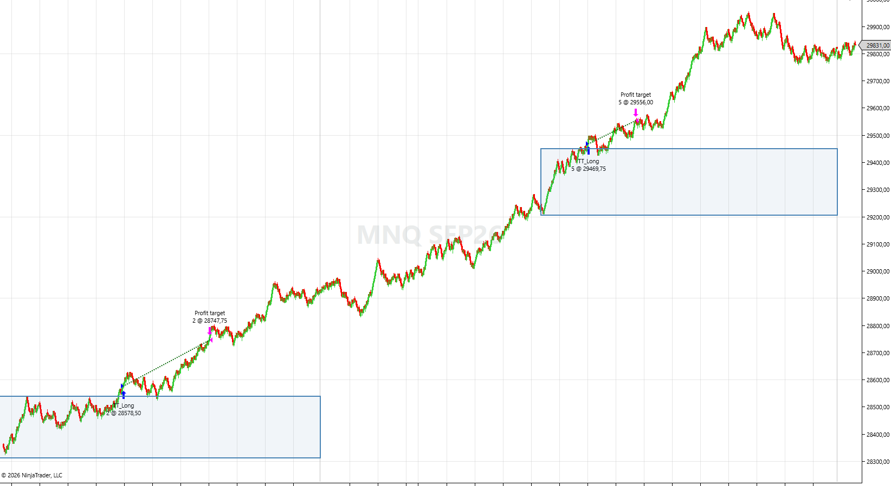
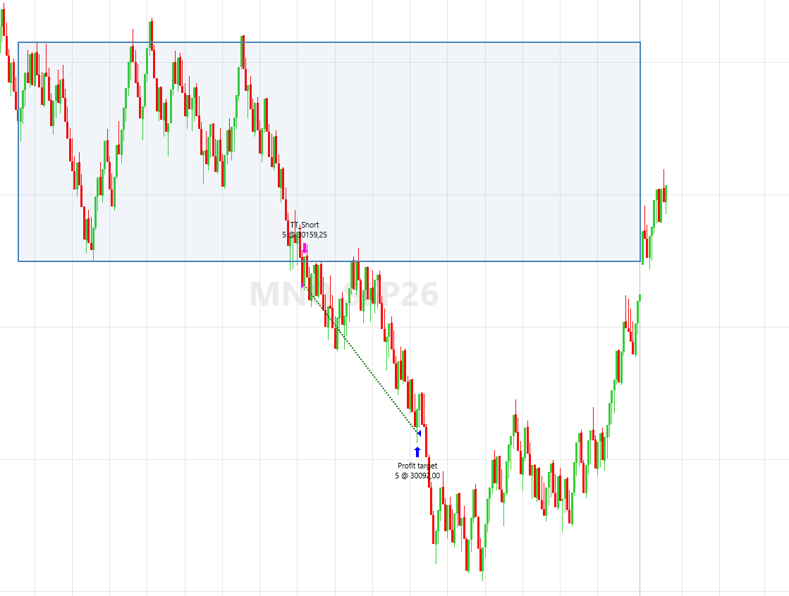

NinjaTrader 8
Danther
Estrategia 100% automatizada para cuentas de fondeo de futuros. Opera el rango de apertura de Nueva York con un solo trade al día y protección de breakeven.
Dos operaciones en largo con objetivo alcanzado

Operación en corto desde el rango de apertura

Características Principales
- ✓ Opera el rango de apertura de la sesión de Nueva York.
- ✓ Un solo trade al día: elimina la sobreoperativa por impulso.
- ✓ Breakeven automático que deja el trade fuera de riesgo en positivo.
- ✓ Cierre forzado al final de la ventana: nunca amaneces con posición abierta.
- ✓ Gestión de riesgo dinámica basada en tu capital.
- ✓ Compatible con copiadores para múltiples cuentas.
¿Por qué junto a Anza?
Anza y Danther leen el mercado de forma distinta y no compiten entre sí: donde una no encuentra condiciones, la otra sí. Por eso el pack de Automatización incluye las dos.
$597 USD
Pago único. Acceso de por vida.
Con Anza en el pack de Automatización: $965 los dos
Comprar ahora (Cripto)